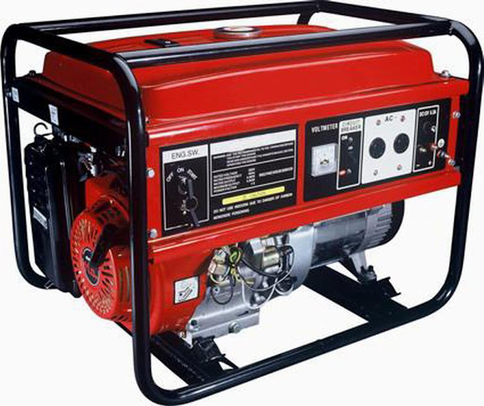

Jual Atap Lengkung di Cimahi ☎ ??? (www.dis.or.id)
Atap adalah hal yang paling penting saat membangun sebuah bangunan. Tergantung setiap kebutuhannya, bagi bangunan yang megah mungkin beton akan menjadi pilihan. Disini, galvalum mempunyai peran penting sebagai atap sebuah bangunan. Adapula atap galvalum yang berbentuk unik yaitu atap lengkung galvalum. Jadi simaklah baik-baik apa saja yang akan saya ulas dalam artikel berikut ini. Maka simaklah artikel yang akan saya ulas berikut ini.
Distributor & Supplier Atap Lengkung

Bagian yang berfungsi sebagai pelindung bagi pengguna dan isi bangunan dari panas, hujan dan berbagai macam cuaca adalah atap lengkung Cimahi. Atap dapat mempercantik bagian atas dari bangunan anda.
Atap lengkung terbuat dari bahan galvalum dan zincalum yang sudah terkomposisi dengan sempuran. Salah satu jenisnya adalah atap lengkung Cimahi. Atap lengkung mempunyai struktur yang sangat terkomposisi sehingga membuat bentuknya menjadi lengkung dan dapat dijadikan sebagai atap lengkung Cimahi.
Penggunaan atap lengkung contohnya adalah pada pembuatan atap stadion. Maka sudah pasti bahwa kualitas atap lengkung Cimahi tersebut sangat diragukan. Terkadang, atap lengkung Cimahi bangunan mereka merupakan atap dengan jenis atap lengkung Cimahi. Atap lengkung yang anda cari tentunya adalah atap dengan kualitas tinggi dengan harga terjangaku. Kami menyediakan atap lengkung Cimahi sesuai dengan keinginan anda.
Info Pemesanan Selengkapnya
Google Maps: https://www.google.com/maps/d/u/0/viewer?mid=1jTQUf9ULWdUIa8iDLwabVtcOdrQf8Eme&ll=-7.272623401464149%2C112.6482284&z=17
Note: https://www.facebook.com/notes/distributor-of-industrial-supply/pabrik-supplier-atap-lengkung/1782710675362145/
Event: https://www.facebook.com/events/137280070316926/
Portfolio Produk: https://www.facebook.com/pg/DistributorOfIndustrialSupplyDIS/photos/?tab=album&album_id=1683772021922678
Distributor & Supplier Besi Beton

Bangunan apakah itu dalam wujud rumah atau toko harusnya menggunakan material yang kokoh dan kuat. Bentuk besi beton ulir yang berupa sirip dapat meningkatkan daya lekat guna menahan pergerakan dari batang secara relatif terhadap beton.
Besi beton polos sangat jarang digunakan kecuali digunakan sebagai kolom.
Segera kunjungi dis.or.id untuk mendapatkan besi beton yang anda inginkan. Anda bisa langsung mengunjungi dis.or.id. Kualitas dan mutunya pun telah terjamin. Jadi, anda tidak perlu ragu lagi.
Distributor & Supplier Steel Grating

Grating merupakan jenis baja yang bisa dibentuk kotak-kotak ataupun bilah yang antar bagiannya saling membentuk hubungan. Salah satunya dengan menggunakan grating dalam kombinasi pembangunan. Umumnya, Grating digunakan untuk kolam renang. Grating ini disusun dari baja berkalit dan dilas di bagian permukaan silangnya. Karena harga murah tidak menjamin adanya kualitas yang terbaik. Grating ini bisa dirangkai plat strip besi baja dan besi ulir yang dilas pada permukaan silangnya sehingga akan membuat bangunan lebih kokoh dan kuat. Grating banyak digunakan dalam pembangunan lantai seperti deck, pabrik, tangga, industri, minyak, pertambangan, dan masih banyak lagi.
Anda bisa mendapatkan steel grating berkualitas dengan mengungjungi dis.or.id.
Distributor & Supplier Pipa (Hitam/Gas, Galvanis)
.jpg)
Pipa hitam gas galvanis pemanfaatannya sangat berbeda dengan jenis pipa pada umumnya, banyak sekali manfaat yang diperoleh dengan mengaplikasikan jenis pipa ini. Karena kekuatan yang dimiliki olehnya, tak heran bila pipa hitam banyak digunakan pada kebutuhan konstruksi. Tentukan kebutuhan pipa hitam anda pada kami, tersedia ukuran ½ inc sampai 40 inc. Hubungi segera kontak yang telah tersedia untuk informasi lebih detail, kami menerima segala kebutuhan besi baja anda kapanpun dan dimanapun.
Distributor & Supplier Kawat Bronjong/Gabion

Kawat bronjong bisa bertahan sangat lama karena kawat ini tidak mudah berkarat. Biasanya ini dilakukan ketika ada jalan atau bangunan yang ada di bawah tebing. Selain itu, sebenarnya kawat bronjong ini juga bisa dikatakan sebagai pemerkuat bukit. Ini mencegah longsor yang mengakibatkan bangunan atau jalan yang berada di atas tebing mengalami kerusakan ketika tanahnya mengalami erosi. Namun, ada juga kawat bronjong PVC yang dilapisi dengan plastik. Anda bisa lihat tumpukan bebatuan di pinggir pantai yang dirantai dengan kawat bronjong. Selain itu, kawat ini juga digunakan sebagai pemecah gelombang ringan.
Untuk itu, kini kawat bronjong sangat banyak dibutuhkan pada segal bidang. Karena disana anda akan mendapatkan penawaran mengenai kawat bronjong denga berbagai ukuran.
Distributor & Supplier WF H-beam

Besi WF kini banyak dikenal sebagai salah satu jenis profil baja Struktural yang berkualitas. Jenis besi ini banyak dimanfaatkan sebagai bahan konstruksi baja. Kekuatan yang dimiliki oleh besi ini memang terbukti kuat dan sangat tinggi. selain itu, besi ini ternyata memiliki kualitas yang terjamin sehingga tidak diragukan lagi. menggunakan besi ini tidak perlu khawatir keberatan karena terbukti ringan dengan komponen yang bagus dan seimbang.
Jika membawanya Anda juga tidak perlu khawatir keberatan karena besi ini lebih ringan dan praktis. Besi ini tergolong jenis besi yang ringan disertai dengan komponen yang sesuai sehingga Anda tidak perlu keberatan saat memakai jenis besi ini.
Besi Wf berkualitas tinggi bisa anda dapatkan dengan sangat mudah di dis.or.id. Disana anda bisa mendapatkan besi tersebut dengan kualitas terbaik serta harga yang sangat terjangkau. Terdapat berbagai ukuran dari besi WF yang bisa anda jadikan pilihan sesuai dengan kebutuhan anda.
Distributor & Supplier Expanded Metal

Expanded metal atau yang dikenal juga dengan grid mesh ini adalah lembaran baja berbentuk jala dengan lubang-lubang yang homogen dan sangat cocok jika digunakan untuk berbagai aplikasi selain dari Pagar BRC. Fungsi expanded metal diantaranya untuk anak tangga pada tower dan ternyata banyak juga digunakan di dermaga/pertambangan/konstruksi lepas pantai. Umumnya dipergunakan sebagai partisi pengaman gudang, railing, pelindung mesin, pagar penjara, plafond, dan lain sebagainya.
Expanded Metal ada yang berbentuk diamond dengan model yang lebih menarik, kuat, ekonomis, serta tahan lama. Jenis ini dapat Anda gunakan sebagai pengaman partisi, pagar pembatas, penutup mesin, tanduk kendaraan, dinding panel, angin-angin dan masih banyak lagi.
Distributor & Supplier Plat (Hitam, Kapal, Bordes, Strip)
.jpg)
Plat yang satu ini mungkin yang paling banyak kita jumpai, bukan sebagai plat bahan bangunan namun sering digunakan sebagai plat lantai pabrik, kendaraan dan berbagai fungsi lainnya. Namun yang terpenting pastikan anda membeli plat besi SNI. Dis.or.id menjual plat besi yang anda butuhkan dengan harga yang murah.
Jika anda sedang mencari plat hitam, bordes, kapal dan jenis plat lainnya. Anda bisa langsung saja mengunjungi dis.or.id. Kualitas yang diberikan sudah terjamin dan bisa anda buktikan sendiri.
Distributor & Supplier Floor Deck (Bondex)

Floor deck ini adalah material yang bisa difungsikan sebagai media pengganti dari material konvensional yang umumnya berbentuk papan lebar, misalnya saja seperti triplek. Biasa di gunakan sebagai alas dalam proses pembuatan lantai dan atap dak beton. Untuk bahan utamanya sendiri umumnya berasal dari plat baja jenis galvanized dilengkapi dengan tulang. Selain itu, Floor Deck ini bisa dipasang pada konstruksi baja ataupun beton serta didukung dengan data perencanaan.
Jika anda ingin mengetahui lebih lanjut mengenai floor deck ini, anda bisa langsung mengunjungi dis.or.id.
Distributor & Supplier Atap Galvalum

Apalagi bila ruangan tersebut tidak dilengkapi pendingin ruangan.
Maka, apakah solusi bagi masalah tersebut? Salah satu solusi yang kami berikan adalah Atap galvalum. Itulah sedikit perbedaan kecil dari rangka atap galvanis dengan kayu. Saat proses pemasangan rangka pada bagian atap.
Ada anggapan bahwa atap galvalum membuat suasana menjadi panas dan bersik. Anggapan ini sangat keliru, karena galvalum bukanlah atap seng pada umumnya. Disini kami menyediakan galvalum yang tentunya sesuai kebutuhan dan dengan harga yang sangat kompromi khusus untuk anda yang membutuhkannya. Jenisnya yang beragam dan banyak ukuran yang dapat disesuaikan mampu memenuhi kebutuhan anda. Perbedaan ukurannya terletak pada panjang, lebar dan tebalnya.
Distributor & Supplier Truss Canal C

Anda pasti mengetahui bahwa truss atau besi kanal c ini tahan terhadap rayap. Bangunan yang menggunakan besi kanal c juga tidak sedikit. Dengan penggabungan galvalum dengan besi kanal c maka sebuah bangunan bisa menjadi lebih kuat dan berkualitas. Sehingga gabungan keduanya menghasilkan kualitas yang bila ditandingkan dengan bahan gabungan lain maka tidak akan kalah berkualitasnya. Besi kanal C bisa menjadi pilihan yang tepat bila anda ingin membangun rumah minimalis dengan desain modern. Satu untuk rangka dan satunya lagi adalah untuk atap. Mencari kanal c galvalum berkualitas dengan harga murah? Maka dis.or.id adalah jawaban tepat untuk anda. Oleh karena itu, jangan ragu lagi atas kegunaan besi yang satu ini. Bila anda mencari kanal c atau truss maka anda sudah datang ke tempat yang tepat. Disini kami menyediakan berbagai macam kanal c dan truss sesuai dengan kebutuhan anda.
Distributor & Supplier Hollow Galvalum

Hollow Galvalum adalah bahan material bangunan yang terbuat dari logam dan bersifat anti karat. Sebenarnya ada banyak unsur yang dilibatkan dalam pembuatan hollow galvalum ini, yaitu alumunium, baja, beserta zinc. Namun dominasi bahan sebagian besar menggunakan alumunium dengan presetase rata rata 55%.
Jika kita berbicara masalah ketahanan, tentu hollow galvalum jauh lebih kokoh dibandingkan dengan penyangga plafon yang berbahan kayu biasa. Untuk anda yang sedang membutuhkan hollow galvalum dalam jumlah kecil ataupun partai besar, dan sedang mencari hollow galvalum berkualitas harga murah. Jika anda berencana membangun sebuah plafon, saran saya pilihlah ukuran yang saya sebutkan diatas. Apakah anda sedang mencari hollow galvalum dengan segala kelebihannya? Bila iya, maka anda cukup mengunjungi situs dis.or.id. Namun sayangnya masih banyak pekerja bangunan yang masih terkendala dari segi pemasangan nya. Dengan banyaknya cabang supplier kami dapat menjangkau pengiriman sampai ke pelosok Indonesia. Tertarik untuk membeli? Hubungi kami sekarang juga, karena kami memiliki penawaran menarik untuk anda.
Distributor & Supplier Seng Gelombang

Seng gelombang memiliki banyak keunggulan dari berbagai sisi. Ia lebih mudah di pasang dan harga jual yang ekonomis dipasaran membuat seng gelombang memiliki banyak peminat. Meskipun begitu, nyatanya seng gelombang memiliki kekurangan yakni ia lebih cepat menyerap panas. Besarnya ukurang seng gelombang membuat banyak orang yang enggan untuk membelinya. Meskipun begitu, nyatanya seng gelombang memiliki kekurangan yakni ia lebih cepat menyerap panas.
Dengan seng gelombang kecil, anda tak perlu lagi repot memotong ukuran asli seng gelombang dan menata seng gelombang dengan ukuran yang pas pada atap bangunan. Jika anda membutuhkan seng gelombang kecil ini sekarang juga, maka segera hubungi kami di dis.or.id untuk kepentingan lebih lanjut. Seng gelombang dengan warna ataupun transparan amatlah awet bila dibandingkan dengan bahan pembuat atap lainnya.
Distributor & Supplier Plat Seng

Membeli plat galvanis memang bisa dilakukan dengan cara lembaran atau per meter. Harga plat galvanis lembaran akan lebih mahal dibandingkan dengan harga per meter.
Hal ini tidak lain dikarenakan plat galvanis lembaran memiliki ukuran yang lebih luas dan bermeter meter. Plat seng dan plat galvalum banyak digunakan untuk berbagai kebutuhan, dari kebutuhan pembangunan rumah, industri, pabrik dan berbagai kegunaan lainnya. Selain lebih hemat, juga anda tidak harus membuang bagian yang tersisa.
Apakah anda sedang mencari plat seng & plat galvalum? Anda berada di tempat yang tepat, silakan kunjungi situs dis.or.id untuk info lebih lanjut.
Distributor & Supplier Genteng Metal

Genteng metal adalah salah satu jenis genteng yang berbahan dasar Zincalume, bahan ini merupakan salah satu jenis bahan yang digunakan pada baja ringan. Kami memiliki stock genteng multiroof, rainbow dan sakura roof terlengkap. Selain itu genteng metal dinilai lebih anti bocor. Keberadaan genteng metal sudah menggantikan genteng konvensional yang terbuat dari tanah liat. Apakah anda sedang mencari genteng metal berkualitas? Maka anda berada di tempat yang tepat, silakan kunjungi dis.or.id dan dapatkan info menarik khusus untuk anda yang ingin segera mengetahui keunggulan genteng metal ini.
Silahkan hubungi kami untuk informasi lebih lanjut. kami berusaha mencari kepuasan pelanggan kami. Karena kepuasan dan kepercayaan pelanggan adalah segalanya bagi kami. Bila belum percaya, maka anda dapat mengujungi situs official kami di dis.or.id untuk mendapatkan info yang lebih lanjut dan dapatkan penawaran terbaik dari kami khusus untuk anda.
Distributor & Supplier Besi Wiremesh

Wiremesh merupakan besi lonjor panjang yang disusun seperti anyaman sehingga membentuk lembaran. Besi wiremesh sering di anggap banyak orang adalah besi anyam karena strukturnya yang mirip dengan anyaman. Bentuk anyam dari besi wiremesh tersedia bermacam-macam, ada yang berbentuk kotak ada juga yang berbentuk jajar genjang, setiap jenis besi wiremesh dapat anda pilih sesuai kebutuhan. Jika anda hendak mengaplikasikan besi wiremesh, maka tentukan dulu kebutuhannya sehingga bisa menentukan jenis wiremesh mana yang cocok untuk diaplikasikan. Besi wiremesh terdiri dengan berbagai macam ukuran ketebalan, ketebalan 8 – 10 digunakan untuk bangunan bertingkat. Sedangkan wiremesh ukuran 4 sampai 6 untuk kebutuhan bangunan biasa. Kami disini menawarkan besi wiremesh dengan kualitas terbaik, di produksi dengan sistem las otomatis sehingga kuat dan susunannya rapi. Bagi anda yang membutuhkan besi wiremesh, kini dapat memesan pada kami!
Distributor & Supplier Pagar BRC

Pagar BRC (British Reinforced Concrete) adalah pagar yang terbuat dari besi beton dengan diameter 5mm – 8mm dimana ketebalannya tergantung dengan ketinggian pagar. Potongan besi tersebut kemudian digabungkan dengan bantuan mesin las wiremesh. Pemanfaatan pagar BRC sendiri tergolong sebagai pagar minimalis yang siap digunakan untuk melindungi sebuah bangunan. Untuk soal kekuatannya, pagar BRC dibuat dengan tegangan tinggi U55 grade yang memiliki tegangan ijin 2900kg/cm2 sehingga kekuatan yang ia miliki bahkan mencapai 2. Anda dapat mengunjungi situs resmi kami di www.dis.or.id, karena pada situs ini terdapat informasi detil mengenai spesifikasi ukuran dan harga.
Distributor & Supplier Kawat Loket, Kawat Harmonika

Kawat loket harmonika sering sekali diaplikasikan pada kebutuhan kawat pagar dan penutup jendela, hal ini tentu tidak tidak lain karena struktur bentuk dari kawat loket harmonika sendiri mirip seperti anyaman yang kuat. Apalagi bila jenis kawat harmonika yang digunakan adalah galvanis yang terkenal tahan karat maupun korosi sehingga sangat awet. Anda dapat menghubungi kami untuk info pemesanan kawat harmonika tersebut, tersedia kawat harmonika dengan diameter 1,5 mm sampai 4 mm, lubangnya bisa mencapai 20mm sampai 70mm tergantung kebutuha anda. kami dapat memenuhi kebutuhan kawat loket harmonika anda dengan beragam ukuran, maksimal ukuran yang diterima adalah 3 meter.
Distributor & Supplier CNP & UNP

Salah satu besi yang bermanfaat sekali untuk kebutuhan konstruksi adalah besi UNP CNP, besi ini melengkung dan membentuk huruf U banyak orang yang memanfaatkan kebutuhan sambungan / duduk atap. Selain sebagai material konstruksi sambungan, besi kanal U banyak digunakan untuk kebutuhan penutup dinding / girts. Besi UNP sebenarnya memiliki spesifikasi yang hampir sama dengan wide flange, hanya saja besi UNP mudah menekuk sehingga sangat jarang digunakan sebagai kolom bangunan. Sedangkan untuk besi CNP sendiri lebih banyak digunakan pada dinding cladding atau gording. Banyak orang yang menyebut besi CNP ini sebagai profil C karena bentuknya melengkung seperti huruf C, meskipun begitu besi UNP dan CNP adalah material konstruksi yang berbeda. Besi CNP dan UNP ini sangat fleksibel, ia bahkan dapat dimodifikasi dengan plat koil yang menggunakan sistem cutting, sehingga tak heran bila banyak orang memesan jenis besi ini. Pemanfaatannya bahkan bisa untuk keperluan otomotif.
Distributor & Supplier Besi Siku

Pastinya anda sudah mengenal material besi siku ini dengan baik, dengan ciri khasnya sebagai besi penyangga banyak sekali manfaat yang diberikan olehnya. Bentuk besi siku sudah terukur sehingga bisa dijadikan penyangga yang bisa diandalkan. Kedua sisi pada besi siku berbentuk tegak lurus dengan sudut yang berbeda, ada besi siku sama sisi, dlsb. Untuk info selengkapnya, anda dapat menghubungi kontak yang telah tersedia. Besi siku dapat anda manfaatkan untuk beragam kebutuhan konstruksi, bangunan, furnitur, dan lainnya. Segera hubungi kontak kami untuk mengetahui spesifikasi besi siku yang anda butuhkan.
Distributor & Supplier Hollow (Hitam, Galvanil, Galvanis)

Besi hollow banyak sekali dimanfaatkan untuk kebutuhan proyek bangunan karena kualitasnya yang lebih kuat dibanding kayu. Apalagi jika mengingat menggunakan besi hollow akan membuat pengerjaan konstruksi selesai lebih cepat. Tentu saja hal ini karena kelebihan yang ditawarkan oleh besi hollow sendiri tidak dimiliki kayu, material yang kokoh, pengerjaan cepat, dan tidak mudah rapuh. Tentu saja hal ini dikarenakan kekuatan yang dimiliki hollow galvanis tidak bisa dibandingkan dengan kayu, material ini juga lebih mempercepat pembangunan konstruksi. Besi hollow memiliki kekuatan yang lebih kokoh dan dapat mempercepat pekerjaan konstruksi karena strukturnya yang mudah diatur. Dis.or.id pun telah menyediakan produk besi hollow hitam galvanis ini untuk dapat anda pesan langsung! Tersedia ukuran besi hollow 40 x 40 x 2 mm x 6 Meter, 50 x 50 x 3 mm x 6 Meter hingga ukuran 150 x 150 x 5 mm x 6 meter dan masih banyak lagi. Terdapat besi hollow dengan berbagai ukuran yang bisa anda pesan langsung, misalnya: ukuran besi hollow 40 x 40 x 2 mm x 6 Meter, 50 x 50 x 3 mm x 6 meter hingga ukuran 150 x 150 x 5 mm x 6 meter.Segera hubungi kontak kami untuk info lebih lanjut. anda dapat memesan besi hollow hitam galvanil galvanis tersebut dengan berbagai ukuran, baik ukuran besi hollow 40 x 40 x 2 mm x 6 Meter, 50 x 50 x 3 mm x 6 meter sampai dengan ukuran 150 x 150 x 5 mm x 6 meter. Kami menyediakan besi hollow hitam dengan ukuran 40, 50, 150 dan lain sebagainya dengan panjang rata-rata 6 meter. Untuk anda yang membutuhkan besi ini, kami menyediakan ukuran besi hollow yang variatif 40 x 40 x 2 mm x 6 Meter, 50 x 50 x 3 mm x 6 meterr sampai dengan ukuran 150 x 150 x 5 mm x 6 meter. Besi hollow bisa dimanfaatkan untuk berbagai keperluan, misalnya seperti pagar, pintu besi, teralis, dan masih banyak lagi. Jika anda membutuhkan besi hollow maka sebelum memesan pada kami anda harus melakukan perhitungan kebutuhan dahulu, seperti berapa panjang dan ketebalan yang diperlukan. Anda dapat menghubungi kontak kami untuk melakukan perhitungan kebutuhan hollow hitam tersebut. Hubungi kami untuk lakukan konsultasi kebutuhan besi hollow dan panjang yang dibutuhkan. Bagi anda yang membutuhkan besi ini, kami dapat membantu anda untuk menentukan ukuran besi yang diperlukan dengan menghubungi kontak kami!
Distributor & Supplier Pipa Pancang

Sebagai salah satu konstruksi bangunan, tentu saja pipa pancang sudah cukup di kenal. apalagi jika berbicara mengenai proyek di atas permukaan laut. Pipa pancang ini sendiri memiliki beragam ukuran sehingga akan memudahkan bagi Anda untuk menyesuaikan nya dengan kebutuhan. Nah, bagi Anda yang sedang membutuhkan pipa pancang, jangan khawatir karena Anda bisa mendapatkannya dengan mudah. Dengan demikian, ketika di gunakan pun bisa semakin maksimal. Bukan hanya kualitas bahannya saja yang bagus tetapi juga untuk pembuatannya. Dengan begini, maka dalam penggunannya, pipa pancang juga bisa di aplikasikan secara maksimal.
Jasa Pondasi Bor (Strouss/Borepile)

Kini untuk memasang pondasi rumah yang sesuai dengan hasil memuaskan, jangan khawatir karena Anda tidak perlu mengkhawatirkan nya lagi. Nah, jika Anda bingung terkait hal itu, kini ada banyak jasa yang bisa menjadi jalan keluar Anda dalam pelayanan pondasi bor. Bahkan tidak perlu jauh-jauh karena di sini juga menerima pemesanan jasa tersebut. Sedangkan untuk kualitas hasil pengeboran nya pun tidak perlu di pertanyakan karena bisa di jamin sempurna dan sangat tinggi. Hanya saja selama proses pengeboran akan muncul suara bising meskipun tidak di sertai getaran. Jika mengenal pengeboran lebih jauh, sebenarnya ada dua jenis yakni manual dan otomatis dengan penggunaan mesin. Untuk masalah kualitas hasilnya pun sama saja jadi tidak perlu khawatir. Sedangkan untuk kualitas pun tidak jauh berbeda sehingga tidak perlu di khawatirkan.
Distributor & Supplier Genset (New/Second)

Sebagai penghasil tenagan listrik kini genset sudah banyak di kenal dan di aplikasikan. Sedangkan dalam pengaplikasian tersebut, tenaga dari genset di hasilkan dari bahan bakar solar. Sedangkan dalam pembeliannya, Anda bisa memilih antara genset baru atau pun yang second. Dan keduanya pun bisa Anda dapatkan di DIS.
Selanjutnya, untuk masalah harga, memang terbilang cukup mahal. Oleh karena itu tidak sedikit yang memilih membeli genset bekas. Meski demikian, masalah kualitas tidak perlu di khawatirkan karena sekalipun sudah bekas, tetap saja kondisinya tidak kalah dari genset yang baru. untuk merk nya pun, genset juga variatif. Dengan demikian Anda bisa menyesuaikan dengan kebutuhan maupun keuangan.
Distributor & Supplier UPS

UPS saat ini sebenarnya telah banyak di gunakan. Sedangkan pengertian UPS sendiri merupakan salah satu dari sekian banyak alat elektronik yang mampu di jadikan sebagai sumber listrik sementara manakala sumber utamanya terputus. Dalam hal inI tentu saja akan sangat penting untuk memilikinya. UPS ini tersedia dalam varian yang berbeda. Karena itulah ketika Anda membelinya silahkan menyesuaikan terlebih dahulu seberapa besar kapasitas penampungan listrik yang di butuhkan. Kalau untuk penjualannya sendiir, bisa di dapatkandi DIS dengan kualitas yang sangat memadai. Sedangkan untuk memiliki UPS berkualitas, Anda bisa merujuk pada DIS. Untuk tingkat ketahanan nya pun juga cukup tinggi sehingga bisa lebih menguntungkan.
Distributor & Supplier Forklift (Second)

Dalam setiap industri, baik itu industri kecil, menengah, hingga yang besar, tentu saja akan banyak yang menggunakan forklif. Termasuk untuk forklif yang dalam kondisi bekas. Sedangkan dalam pembeliannya, bisa memilih baik yang baru ataupun yang bekas. Nah, jika Anda sedang mencari bekas pun di DIS juga bisa di dapatkan. Nah, dengan kualitas yang bagus ini, maka forklif akan membuat aktivitas industri Anda menjadi lebih mudah dalam berbagai hal. Sedangkan yang lebih menguntungkan lagi darinya adalah, ketika Anda sudah tidak memerlukannya, maka bisa di jal kembali pada distributor forklif.
Jasa Pembuatan Moulding Inject

Di sini pun Anda bisa mendapatkan jalan keluarnya. Selain itu, masalah kualitas pun juga tidak kalah karena moulding inject yang di hasilkan memiliki kualitas terbaik. Bahkan ketika Anda bingung ide, ada banyak pilihan yang bisa di gunakan dan di sesuaikan dengan kebutuhan. Jadi tinggal menyesuaikan saja dengan kebutuhan Anda sehingga pembuatannya bisa benar-benar pas.
Jasa Pembuatan Sparepart Mesin Produksi / Alat Berat

Alat berat, di dunia mesin tentu saja bukanlah barang atau produk yang asing. Terlebih jika mengingat lebih jauh bahwa alat ini memiliki fungsi yang cukup penting sehingga membutuhkan perhatian tinggi dalam pembuatannya. Jadi sebisa mungkin Anda harus memilih jasa terpercaya. Jika telah memilih jasa terpercaya, maka hasilnya pun akan terjamin dan semakin aman. alasannya adalah, jika ada kesalahan yang cukup fatal, maka bisa jadi akan membahayakan pekerja yang sedang menggunakannya. sedangkan untuk jasa profesional di sini akan menghasilkan DIS dengan kualitas tinggi sehingga akan lebih aman lagi untuk di aplikasikan. DIS pun juga akn menawarkan jasa yang bisa menghasilkan alat berat secara sempurna.
Jasa Service Elektronik (Kompor Gas, Dispenser, Mesin Cuci)

Service elektronik, kini sudah banyak di temui. Jadi ketika terasa ada yang salah dengan barang-barang elektronik Anda, jangan khawatir karena di sini Anda bisa memperbaiki dan mendapatkan hasilnya seperti sedia kala. Jika Anda bingung di mana memperbaiki barang tersebut, bisa saja langsung merujuk pada salah satu jasa yang di tawarkan DIS. Industri DIS sendiri juga menyediakan jasa sedemikian rupa. Selanjutnya, untuk masalah kualitas, tidak perlu di pertanyakan lagi karena DIS akan memberikan jasa yang memiliki perhitungan tingkat perbaikan dan keamanan yang tinggi. Nah, apa pun barang yang perlu di perbaiki, kini akan kembali berfungsi seperti semula. Hanya saja kebanyakan orang memang melakukan service elektronik saat ada keluhan yang di rasakan saja.
Atap memang tidak diragukan lagi manfaatnya, bisa bayangkan bukan bila ada bangunan tak beratap. Dari yang modern sampai konvensional atap selalu ada di setiap bangunan. Atap memang adalah kebutuhan primer bagi setiap bangunan. Sudahkah anda mengerti akan manfaat atap yang sudah pasti kita butuhkan? Silakan kunjungi dis.or.id untuk informasi lebih lanjut dan dapatkan penawaran yang sesuai dengan kebutuhan anda. Karena sebuah rumah tidak dapat disebut rumah tanpa atap diatasnya.